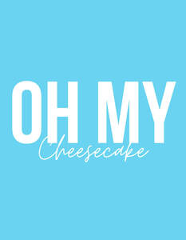

Trade Mark Journal No.2025/037 12 September 2025
UK00004255837 28 August 2025 (29,30,32,35,43)

- Class 29
- Fruit desserts; Dairy desserts; Yoghurt desserts; Chilled dairy desserts; Fruit-based fillings for cakes and pies; Desserts made from milk products; Snack food (Fruit-based -); Cheese-based snack foods; Dairy puddings; Milk-based beverages flavored with chocolate; Artificial milk based desserts; Jellies for food, other than confectionery.
- Class 30
- Puddings for use as desserts; Chocolate desserts; Custards [baked desserts]; Prepared desserts [pastries]; Dessert puddings; Dessert souffles; Muesli desserts; Prepared desserts [confectionery]; Chocolate-based fillings for cakes and pies; Custard-based fillings for cakes and pies; Savory pastries; Ice cream desserts; Prepared desserts [chocolate based]; Cheesecakes; Instant dessert puddings; Rice-based pudding dessert; Foodstuffs made of sugar for sweetening desserts; Chocolate pastries; Pastries, cakes, tarts and biscuits (cookies); Chocolate decorations for cakes; Sweets; Foodstuffs made of a sweetener for sweetening desserts; Flavorings for cakes; Chocolate cakes; Iced fruit cakes; Ice-cream cakes; Pastries; Chocolate-based beverages; Beverages (Chocolate-based -); Vegan cakes; Sorbets; Chocolate sweets; Mousse confections; Pies [sweet or savoury]; Sugar-free sweets; Fruit cake snacks; Savory sauces; Cakes; Iced cakes; Savoury sauces; Fruit cakes; Chocolate confections; Chocolate syrups for the preparation of chocolate based beverages; Savory pancakes; Sherbets [sorbets]; Chocolate sauces; Caramels [sweets]; Chocolate beverages; Pastries with fruit; Fruit pastries; Savoury pancakes; Cream cakes; Flavourings for cakes; Macaroons [pastry]; Sweets (Non-medicated -) in the nature of chocolate eclairs; Savory sauces used as condiments; Puddings; Frozen pastries; Tiramisu; Cupcakes; Sweets (Non-medicated -) being acidulated caramel sweets; Flavourings of almond for food or beverages; Almond pastries; Candy decorations for cakes; Chocolate syrups; Corn-based savoury snacks; Mousses (Chocolate -); Chocolate mousses; Frozen cakes; Chocolate fillings for bakery products; Chocolate-based beverages with milk; Chocolate flavoured beverages; Sorbets [ices]; Cheesecake; Candies [sweets]; Foodstuffs made of a sweetener for making a dessert; Cereal-based savoury snacks; Foodstuffs made of sugar for making a dessert; Chocolate decorations for confectionery items; Rice cake snacks; Frozen yogurt cakes; Sugarless sweets; Sherbets [confectionery ices]; Drinks prepared from chocolate; Chocolate food beverages not being dairy-based or vegetable based; Pastries containing creams and fruit; Pâté [pastries]; Fruit pies; Chocolate-based ready-to-eat food bars; Frozen dairy confections; Drinks flavoured with chocolate; Sugarfree sweets; Sherbets [confectionery]; Beverages made with chocolate; Beverages made from chocolate; Savory sauces, chutneys and pastes; Savoury biscuits; Profiteroles; Frozen yogurt confections; Ready-to-eat puddings; Flavourings of lemons for food or beverages; Sauces for pizzas; Ice confections; Custards; Edible gold for decorating food and beverages.
- Class 32
- Sorbets [beverages]; Fruit-based beverages; Frozen fruit-based beverages; Frozen fruit-based drinks; Sherbets [beverages]; Sorbets in the nature of beverages; Mixes for making sorbet beverages; Iced fruit beverages; Smoothies [non-alcoholic fruit beverages]; Syrups for beverages; Sherbet beverages; Non-alcoholic syrups for making beverages; Syrups for making non-alcoholic beverages; Syrups and other non-alcoholic preparations for making beverages.
- Class 35
- Retail services in relation to desserts.
- Class 43
- Cake decorating.
ARIF PATEL